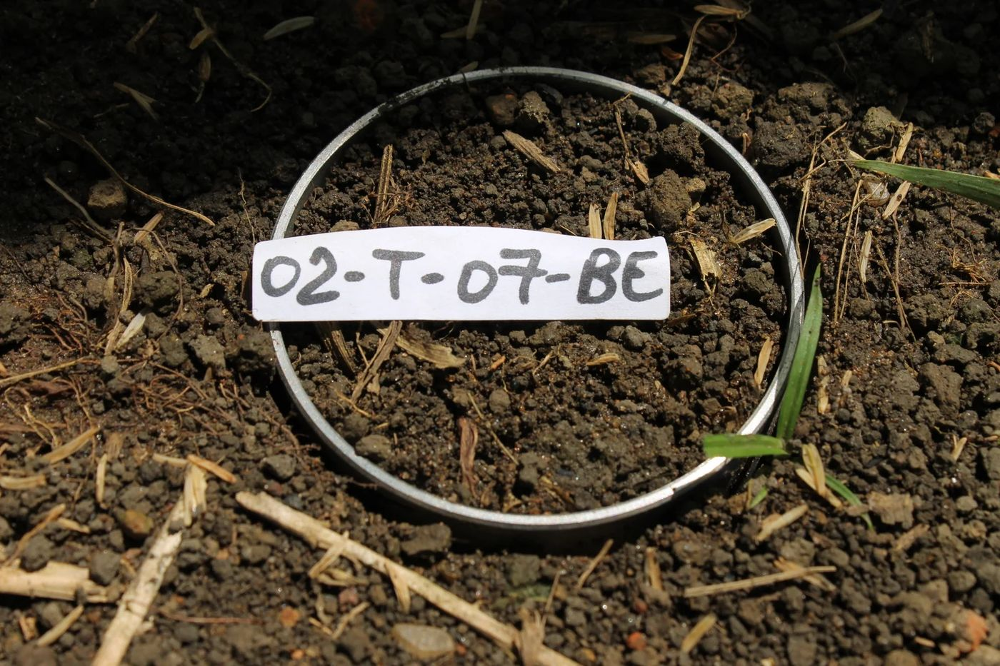
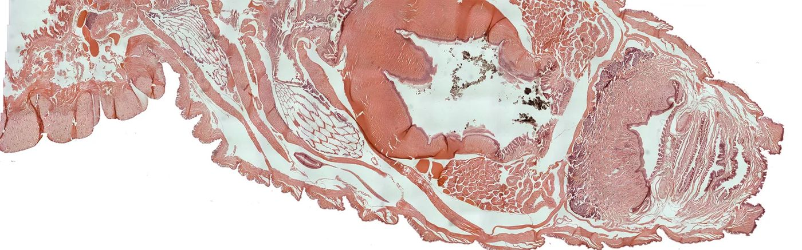
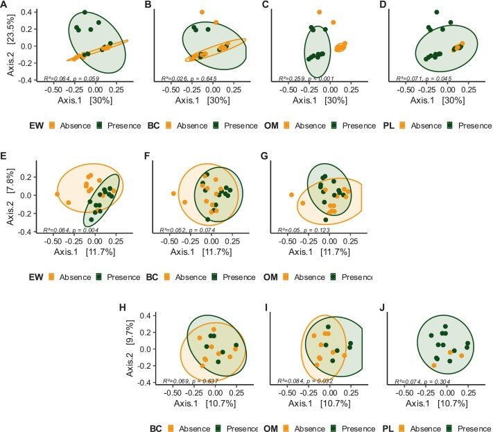
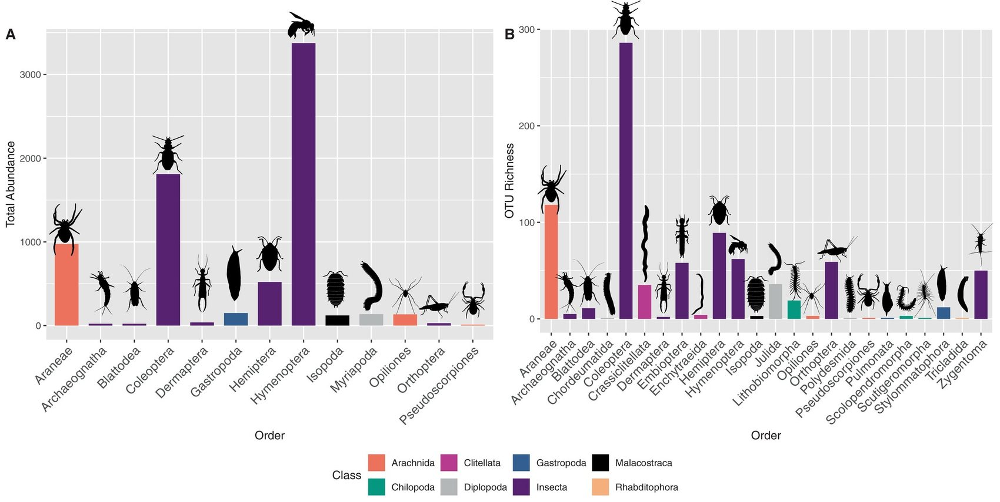
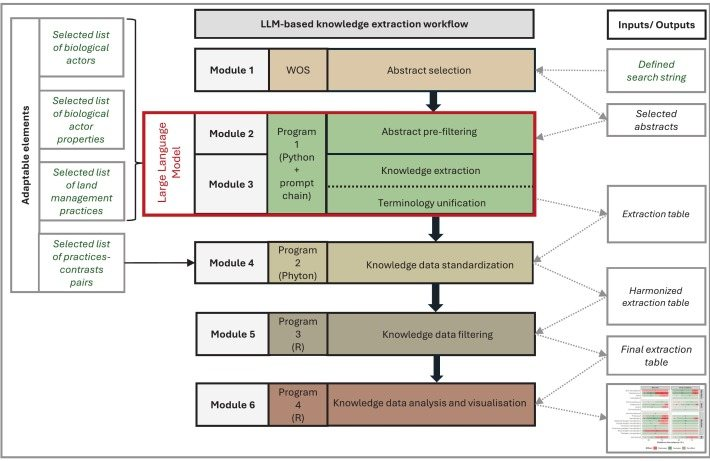
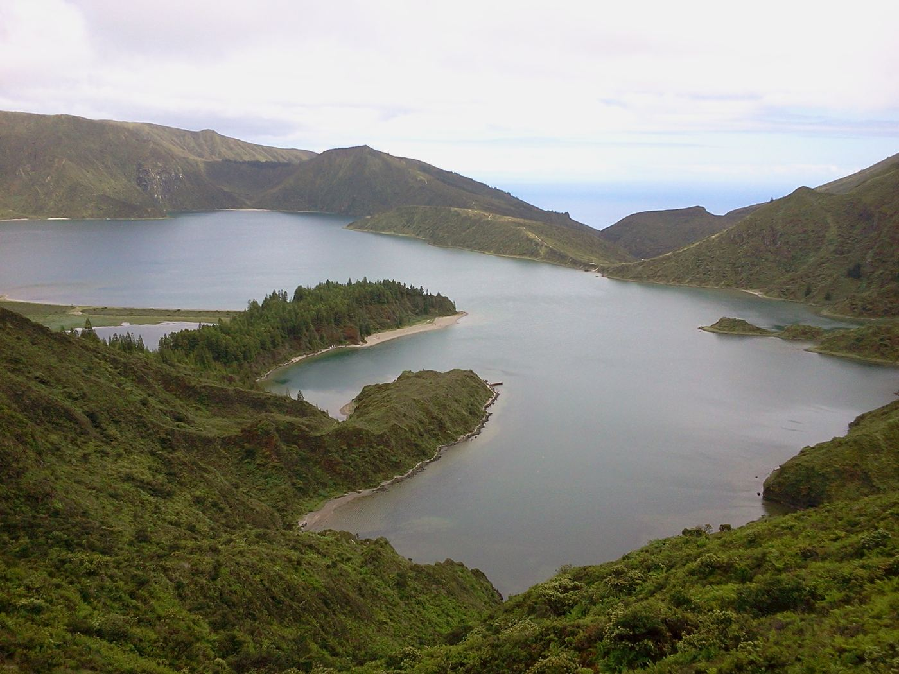

EnGeL reads the soil as an archive — of biodiversity, of adaptation, of the long entanglement between people and the land. We work from field observation to the genome, turning environmental complexity into knowledge.
A research group in love with earthworms and their allies — and with the quiet, complex world they hold together.
Our work sits at the meeting point of conservation biology, soil ecology and environmental genomics. We use earthworms and other soil organisms as living instruments — sensors that record how ecosystems function, adapt and persist under natural and human pressure.
From the Amazon and the Azores to Mediterranean soils, we combine fieldwork, molecular tools and next-generation sequencing to ask how biodiversity is generated, disturbed and sustained — and how the traces of people are written into the ground itself.
Every finding begins in the field and ends in understanding. The path between them is deliberate — observation, evidence, interpretation — each layer of the ecosystem revealed in turn.

We work where the questions live — tropical forests, volcanic slopes, agricultural soils and grasslands — recording context and collecting the organisms and sediments that hold the record.
Amazonia · Azores · Galápagos · Mediterranean Europe
In the wet lab, tissue and soil become data: DNA and RNA extraction, barcoding, library preparation and sequencing on Illumina and real-time Oxford Nanopore platforms.
Genomes · transcriptomes · microbiomes · DNA metabarcoding
On the command line and in code, sequences become structure — assemblies, phylogenies, population and landscape genomics — connecting molecular evidence back to living ecosystems and real environmental challenges.
Bioinformatics · population genomics · FAIR & open scienceA glimpse of the analytical outputs behind our papers — community structure, biodiversity across taxonomic orders, and the workflows that turn raw sequence and literature into knowledge.


Our science feeds European soil monitoring, sustainable agriculture and biodiversity conservation, built across three decades of funded, collaborative research.
Building open, high-resolution soil-hydrology data infrastructure for Europe under the EU Soil Mission.
Harmonising how Europe monitors soil, defining the biological benchmarks for healthy ground across the continent.
Tracking human settlement across Amazonia through the genomes of earthworms bound to the Dark Earths people made.
Ecologists, molecular biologists, bioinformaticians and field researchers working between Coimbra, the UK, Brazil and the wider EU.

We welcome students, collaborators and partners who want to turn environmental evidence into knowledge and action. Whether you bring a question, a dataset, or a place to study — there is room in the investigation.